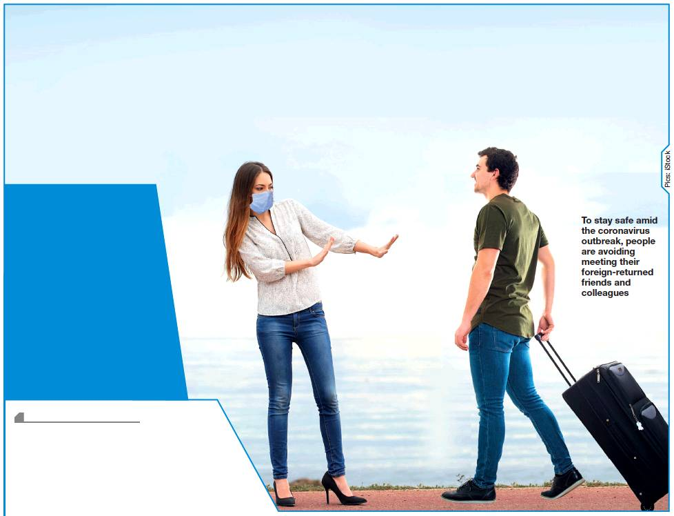

Indiabulls chairman Sameer Gehlaut and Kapil Wadhawan of DHFL have cited the Covid-19 outbreak to express their inability to appear before the Enforcement Directorate in connection with the probe into alleged quid pro quo between them and Yes Bank co-founder Rana Kapoor. Sources said Gehlaut has conveyed to the ED that he left for the UK before summons were served and that until travel restrictions remained in force, he would not be able to join the investigation into whether he allegedly paid Rs 685 crore as bribe to Kapoor in exchange of loans from Yes Bank. Wadhawan, untraceable since March 9 when the CBI raided his premises, had also pointed to the pandemic to say he would not appear before the agency. Subhash Chandra of Essel group, another recipient of a big loan from Yes Bank, who is also an MP, has cited his preoccupation with the ongoing budget session to say that he cannot join the investigation until Parliament adjourns on April 3.
